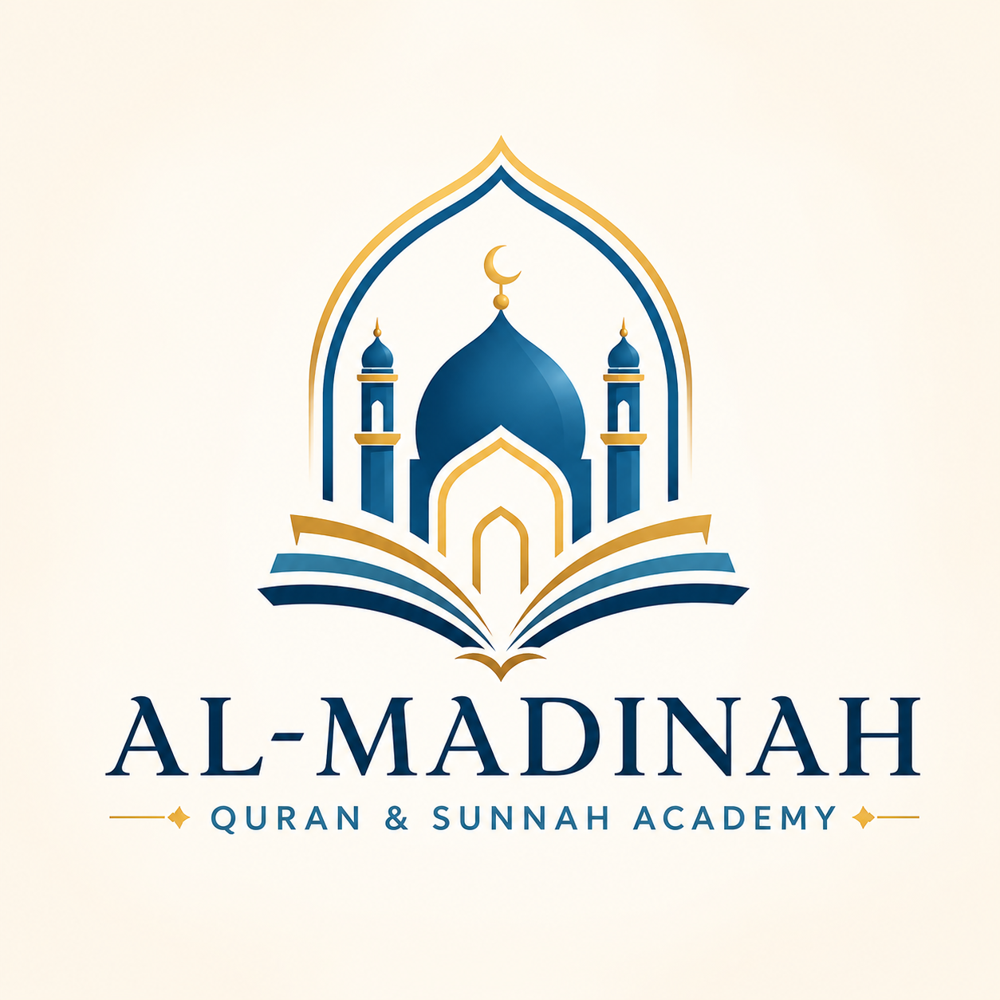

Assess
We begin with the student’s current reading, recitation, age, goals, and confidence level.
Academy
Al-Madinah Quran and Sunnah Academy was created to help students build strong foundations in Quran, Arabic, and Islamic practice.
Mission
Our aim is to connect students to the Quran and Sunnah through clear teaching, patient correction, and a learning culture that honors both knowledge and character.
We serve children beginning with their first Arabic letters, adults returning to recitation, non-Arabic speakers who want access to Quranic language, and families seeking a dependable Islamic learning environment.

Teaching Method
A simple teaching rhythm keeps students grounded: assess carefully, teach clearly, practice consistently, and review before moving forward.
We begin with the student’s current reading, recitation, age, goals, and confidence level.
New skills are introduced in manageable steps: letters, sounds, rules, vocabulary, and meaning.
Teacher feedback turns practice into accuracy, especially in pronunciation and recitation.
Review and repetition help students keep what they learn and prepare for the next level.
Founders & Lead Educators
Al-Madinah Quran and Sunnah Academy was founded with a clear purpose: to provide authentic Islamic education rooted in the Quran and Sunnah, taught with clarity, care, and respect for every learner.
As Muslims living in the great city of Ottawa, we saw a growing need for structured Islamic learning that gives students more than information. Families need a place where Quran recitation is corrected properly, Arabic pronunciation is taught carefully, and students are guided to recognize sound Islamic teaching with confidence.
Our academy is built on sincerity, experience, and service. We aim to support children, youth, adults, and families in their journey of learning the Quran, Arabic, and Islamic foundations in a way that is welcoming, practical, and faithful to the teachings of Islam.

Co-Founder & Academy Director
Emad is a co-founder of Al-Madinah Quran and Sunnah Academy and helps lead its vision, structure, technology, and community development.
With nearly 20 years of experience across enterprise project management and digital systems, including IT infrastructure, cybersecurity, network systems, digital design, and web development, he brings organization, strategic planning, clear communication, and technology leadership to the academy’s growth.
Emad’s connection to Quran and Islamic learning began at an early age through Quran memorization contests during his school years. As a native Arabic speaker fluent in English, he places strong emphasis on Arabic foundations, correct pronunciation, Tajweed, and helping students build confidence in Quran and Arabic learning.
He has also studied and received ijazahs in Islamic texts and subjects including Aqeedah, Tawheed, Fiqh, Hadith, al-Usool ath-Thalathah, al-Arba‘un an-Nasawiyyah, ‘Umdat al-Ahkam as-Sughra, ‘Umdat al-Ahkam al-Kubra, and al-Muwatta’ of Imam Malik. This foundation supports his commitment to an academy built on authentic knowledge, careful teaching, and respect for the tradition of Islamic scholarship.
He has also supported mosques across Ottawa by helping build Quran halaqas and supporting children and youth in their Islamic learning journey.
At Al-Madinah, Emad’s focus is to help build a serious, welcoming, and well-organized academy where students and families are supported with clarity, care, and steady progress in Quran, Arabic, and Islamic learning.
Co-Founder & Lead Quran & Islamic Studies Educator
Ayah is a co-founder of Al-Madinah Quran and Sunnah Academy and serves as the lead educator for Quran and Islamic Studies.
She memorized the Quran at an early age and pursued higher education at Imam Muhammad ibn Saud Islamic University, completing a program focused on preparing teachers of Quran and Islamic Studies. With more than 23 years of experience in Quran education, she has taught students of different ages and levels with a focus on proper recitation, Tajweed, memorization, and steady progress.
Ayah has received ijazahs in Qira’at, including Hafs and Shu‘bah from ‘Aasim, and Qalun from Nafi‘. She has also studied and received ijazahs in Islamic texts and subjects including Aqeedah, Tawheed, Fiqh, Hadith, al-Usool ath-Thalathah, al-Arba‘un an-Nasawiyyah, ‘Umdat al-Ahkam as-Sughra, ‘Umdat al-Ahkam al-Kubra, and al-Muwatta’ of Imam Malik. This foundation supports her teaching with authentic knowledge, careful correction, and respect for the tradition of Islamic scholarship.
She continued developing her skills through studies at institutions including Algonquin College, with focus areas connected to practical administration, digital design, and graphic design. This background helps support an organized, welcoming, and visually thoughtful learning environment for students and families.
As a native Arabic speaker fluent in English, Ayah supports Arabic-speaking and non-Arabic-speaking students with clarity, patience, and care. Her teaching helps students build confidence, adab, and love for the Quran and Islamic learning.
At Al-Madinah, Ayah’s goal is to help learners recite with confidence, grow through patient correction, and strengthen their connection to Allah through authentic knowledge.
Why Families Choose Al-Madinah
Families choose Al-Madinah for structured Quran, Arabic, and Islamic Studies programs that are rooted in the Quran and Sunnah and designed for steady growth.
Our programs are rooted in the Quran and Sunnah, with careful attention to sound Islamic understanding. Students are taught to value authentic knowledge and to distinguish reliable Islamic teaching from confusion, falsehood, and unfounded religious practices.
We place strong emphasis on correct pronunciation, letter exits, fluency, and Tajweed. Students are not rushed. They are guided with correction, repetition, and patient instruction.
Arabic is not treated as an optional add-on. We focus on pronunciation, vocabulary, reading, and Nahw so students can build a stronger relationship with the language of the Quran.
Al-Madinah is led by founders with deep educational, technical, administrative, and community experience. This allows the academy to combine authentic Islamic learning with organized systems and clear communication.
Our work is connected to real community needs. Through supporting Quran halaqas, youth learning, and families across Ottawa, we understand the importance of building a safe and structured environment for Islamic education.
We support children, youth, adults, families, and non-Arabic speakers with patience and clarity. Our goal is to make serious Islamic learning approachable without weakening its authenticity.
Teaching Commitment
At Al-Madinah Quran and Sunnah Academy, we are committed to teaching with sincerity, clarity, and adab. We do not aim to impress with claims. We aim to serve Allah by helping students learn correctly, practice consistently, and grow in their Deen with confidence.